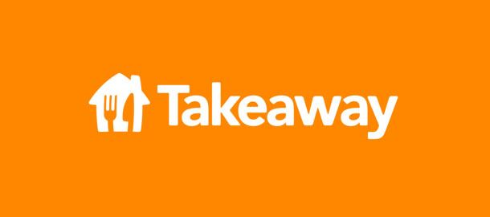

Проект за ADVB605 Брандинг
Екип: Даниел Каменов, Дейвид Досев
Описание: Студентски проект с цел проучване на бранд по наш избор и правене на колаборация с друг бранд по наш избор. Проучването включва: история на бранда, бранд адвокати, таргет групи, подходящи канали за комуникация и пример за колаборация.
Роля: Проучване на бранда и на пазара на електрически автомобили, както и изготвяне на концепция за партньорство със Спарк.
Цел: Положителен бранд имидж за Тейкауей и повече потребители за Спарк.
Проблем: Въздухът в София става все по-замърсен, трябва да направим активация към бъдещето и да премахнем емисиите на вредни газове.
Предизвикателство: Да намерим начин да запонем промяната в мисленето на хората и да ги мотивираме да подобрят начина си на мислене.
Медии: Онлайн платформите на двата бранда – социални мрежи + приложения.
Визии